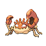

Назад
Крабби
Крабби — Покемон первого поколения под номером 98 в Покедекс. Обитает он в регионе Канто и относится к Водному типу. Крабби обитает на пляжах, зарываясь в небольшие песочные ямы. На песчаных пляжах, где мало еды, можно увидеть этих Покемонов, ссорящихся друг с другом из-за территории.
Тип:
Водный
Эволюция
# 098 Крабби
=>

# 099 Кинглер